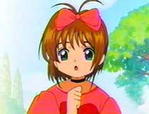
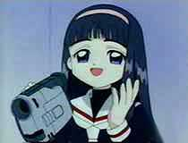
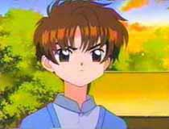
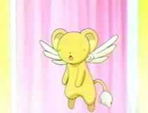
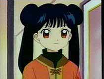

|  | Sakura is the main character in this anime. She is a very sweet and caring person who is nice to everyone. She lives with her older brother, Tori, and her father, Aiden. Sadly her mother passed away when Sakura was only three years old. Sakura is excellent at sports and is one of the schools cheerleaders. |
|  | Madison is Sakura's best friend. She loves video recorders and tries to film Sakura whenever she is capturing a card. Madison comes from a pretty wealthy family and is always dressing Sakura up in fancy costumes for every capture. Madison has helped Sakura out many times sometimes even suggesting which cards to use. |
|  | Lee is a direct descendent of Clow Reed. When he first comes to Readington, he tries to take the cards away from Sakura and really intimidates her. He seems cold and arrogant, however, soon he begins to work with Sakura. It's not long before his true feelings for her begin to show, which is why he is always blushing. Lee is usually seen wearing his familie's ceremonial robes during a capture. |
|  | Keroberos or Kero is the first guardian of the powerful Clow Cards. He guides and assists Sakura in capturing the cards. He lives in a miniature room in Sakura's desk drawer. Some of his favorite things are playing video games, sleeping and eating. Kero cannot change to his original form until Sakura captures the fire and earth cards from which his power is derived. |
|  | Meilin is Lee's cousin as well as his fiance by arrangement (do they still do that??). She is very competitive with Sakura. Lee and Meilin trained together learning martial arts at a very young age. She excels, not only in the martial arts, but all athletics. Even though rivals, Meilin and Sakura will become good friends. |